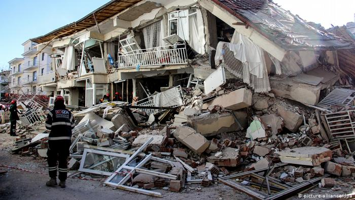
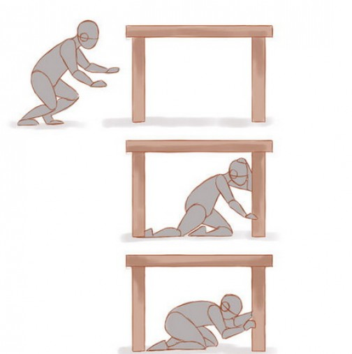

„Залегни, покрий се, дръж се!“
В момента, в който усетите първото разклащане:
Не напускайте сградата, ако не можете да излезете на открито за около 10 СЕКУНДИ.
Не се опитвайте да излезете, ако:
- Сте над първия етаж
- Входът е задръстен от хора
- Ако се съмнявате, че можете да излезете за 10 секунди. В този случай опасността да се нараните по пътя към
изхода е по-голяма, отколкото ако останете вътре.
- Заемете най-безопасното място – под рамката на вратата, близо до вътрешна стена, колона, под стабилна маса
или легло, съветва Главна дирекция „Пожарна безопасност и защита на населението“.
Следвайте тези три стъпки:
- Залегни
- Покрий се
- Дръж се
Ако сте навън:
- Застанете колкото се може по-далеч от сгради, електропроводи, стълбове и дървета, на възможно най-открито
пространство, залегнете и се свийте.

